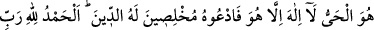
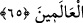

Sâib şöyle diyor:
Dört defter dokuz kitabı Hak senin noktanda gizledi.
Sana hizmet için felekler, köle gibi ihlâs ile kemer bağladı.
Bütün melekler sahip oldukları ilim ve mertebeye rağmen
Senin önünde zillet toprağına başlarını eğdi.
“Ve sizi temiz besinlerle” lezzetli yiyeceklerle “rızıklandıran Allah’tır.”
et-Te’vîlâtü’n-Necmiyye’de şöyle der: Tertemiz (tayyib) olan, yaratıkların tertemiz
gördüğü şeyler değil, Yaratıcının tertemiz bulduğu şeylerdir. Çünkü O öyle tertemiz bir
zattır ki tertemiz olanın dışındakileri kabûl etmez. Allah’ın kulundan, bizzat kendi
yaptığı bir şey olarak, kabul edebileceği tertemiz şeyler, riya ve şüpheden uzak
kelimeler kelim-i tayyibdir. Nitekim bir âyette: “O’na ancak temiz ve güzel kelimeler
ulaşır” (Fâtır 35/10) buyrulur. “Allah’ın hibesi olan” tertemiz ise, O’nun cemal ve
celâl sıfatlarının tecellîsidir. İşte “Ve sizi tertemiz besinlerle rızıklandıran Allah’tır”
ifadesiyle bu iki sıfata işâret edilmektedir. Hâsılı, “tertemiz” kavramı, birkaç kısma
ayrılır: Tertemiz rızıklar, tertemiz zikirler ve tertemiz haller.
“İşte Allah, sizin” kulluğunuza lâyık olan “Rabbiniz,” bütün bu yüce sıfatlarla tavsif
edilen zâttır.
“Âlemlerin Rabbi” yâni bütün varlıkların, hükümranlığı altında bulundukları,
zatlarında, varlıklarında ve bütün diğer hallerinde kendisine muhtaç oldukları; hem de
üzerlerindeki feyzi bir an bile kesildiği takdirde tamamen yok olacakları sahip ve
eğiticileri olan “Allah, yücelerden yücedir.”
65. O daima diridir; O’ndan başka hiçbir tanrı yoktur. O halde dinde ihlâslı ve
samimi kişiler olarak O’na duâ edin. Her türlü övgü âlemlerin Rabbi Allah’a
mahsustur.
“O dâimâ diridir. O’ndan,” yarattıklarını öldürdüğü halde, kendisi hiç ölmeyen, zâtî
ve gerçek hayata sâhip yegâne varlıktan, “başka tanrı yoktur.” Çünkü zatında,
sıfatlarında ve fiillerinde O’na yaklaşabilecek hiçbir varlık söz konusu değildir. “O
halde dinde ihlâslı ve samîmî kişiler olarak,” itâati gizli ve açık şirkten kurtararak
“O’na duâ edin. Her türlü övgü âlemlerin Rabbi Allah’a mahsustur.”
İbn Abbas (r. anhümâ)’dan mervîdir ki: Her kim “Lâ ilâhe illâllah” derse peşinden
“el-hamdülillâhi rabbi’l-âlemîn” de desin.
et-Te’vîlâtü’n-Necmiyye’de der ki: O diridir; yâni ezelî, ebedî ve gerçek hayatlar